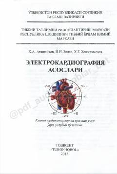

EAElektrokardiografiyaning nazariy va amaliy asoslari bo'yicha tibbiy o'quv qo'llanma.
Ushbu o'quv-uslubiy qo'llanma elektrokardiografiyaning nazariy va amaliy asoslarini, jumladan yurakdagi elektr impulslarining hosil bo'lishi va EKG tahlilini qamrab oladi. Kitobda yurak gipertrofiyasi, miokard infarkti va ritm buzilishlarini EKG yordamida aniqlash usullari batafsil yoritilgan.